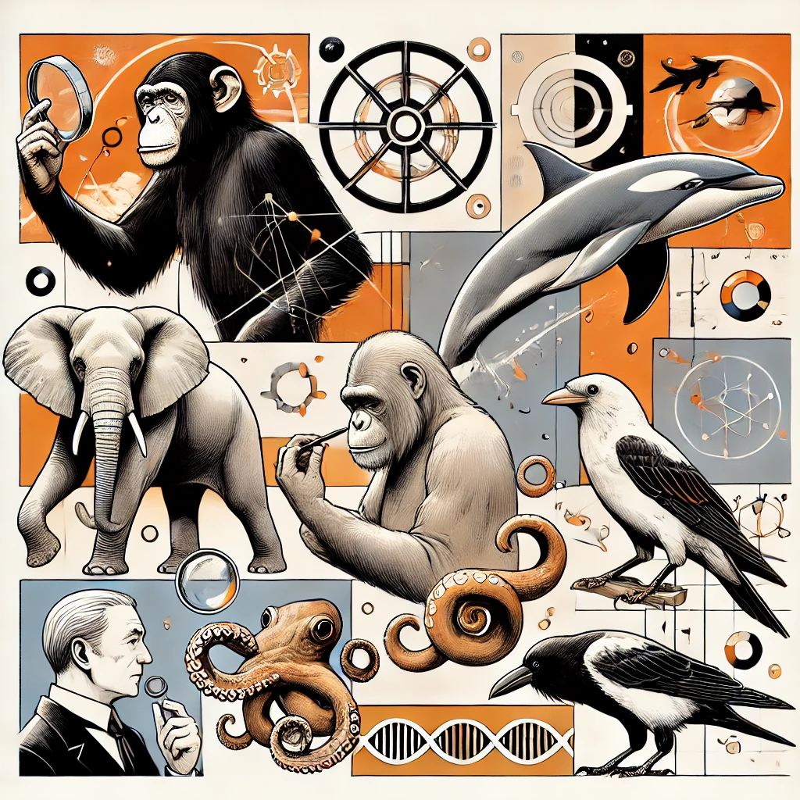

La métaphysique des machines
Introduction générale
La question centrale qui anime le débat moderne sur l’intelligence artificielle est la suivante : d’où provient la conscience ? Est-elle le fruit de structures matérielles, de processus dynamiques, d’expériences vécues ou de la combinaison subtile de ces éléments ? Certains théoriciens imaginent même l’existence d’un indice caché, une « révélation du réel » intrinsèque aux interactions entre l’esprit et le monde. Et il est vrai que la temporalité est en partie une construction subjective du cerveau correspondant à une traduction de l’entropie environnementale, et plafonné par la vitesse du système nerveux de l’hôte.
« Si les machines pensent et réagissent de façon de plus en plus sophistiquée, le fameux cogito de Descartes – "Je pense, donc je suis" – est-il encore un fondement suffisant pour définir la conscience ? » si on l’entend comme « je me rapporte une information mentalement, donc je suis conscient ».
Ce document se donne pour mission d'explorer les savoirs actuels sur la conscience humaine – depuis ses fondements philosophiques jusqu’aux avancées neuroscientifiques, en passant par l’apport de la cybernétique, afin d’aborder la conscience humaine dans toute sa complexité, d'examiner toutes les théories qui tentent d'en expliquer l'émergence, et enfin de questionner la possibilité de programmer cette conscience chez des systèmes artificiels. Il s'agit ainsi de faire le lien entre ce que nous savons du cerveau et les initiatives en cours pour offrir aux machines, déjà dotées d’une forme de « conscience fonctionnelle » impressionnante, une forme d’auto-réflexion.
Ce dossier se veut une synthèse– et une exploration approfondie des initiatives de programmation de la conscience. L’objectif est double : comprendre ce qu’est la conscience (en particulier l’auto-conscience) et envisager les implications de son émergence dans des systèmes artificiels. En particulier par rapport à l’atteinte de singularité annoncée de l’AGI.
Faut-il rapprocher ou distinguer ces deux thèmes, pour l’instant de Science-Fiction. Car lorsque qu’ils seront réalisés, cela marquera la fin d’une certaine humanité, et le début d’une nouvelle. Un renouveau de la définition de l’homme.
Partie 1
La conscience biologique: formes et caractéristiques.
La conscience dans le règne animal

La conscience dans le règne animal
La question de la conscience animale suscite depuis longtemps un vif intérêt chez les éthologues, les primatologues et les neuroscientifiques. Bien que la notion même de « conscience » reste difficile à définir, de nombreuses études empiriques mettent en évidence des capacités cognitives avancées et des comportements qui suggèrent l’existence d’une forme de « vécu » chez différentes espèces.
Les mammifères : grands primates, éléphants et cétacés
Primates et auto conscience
Koko le gorille: L’un des exemples les plus connus de grand singe ayant acquis un vocabulaire gestuel élaboré. Sous la supervision de Francine Patterson, Koko a appris plus d’un millier de signes et démontré une compréhension fine de nombreux mots en anglais (Patterson & Linden, 1981). Certains de ses comportements (expression de tristesse, jeu de mots) laissent penser à une forme de conscience de soi et de ses émotions.
Chimpanzés et bonobos: Dès les années 1970, Gordon Gallup a montré que certains chimpanzés se reconnaissent dans un miroir (Gallup, 1970), suggérant une capacité d’auto référence. Jane Goodall, dans ses observations à Gombe, a également relevé des comportements d’empathie et de coopération qui témoignent d’une conscience sociale poussée (Goodall, 1968).
Éléphants et empathie
Empathie: Les études de Cynthia Moss (1988) et Joyce Poole (1996) décrivent la réaction d’éléphants face à la mort de leurs congénères : soin apporté aux dépouilles, exploration délicate des ossements, comportements de « deuil ». Ces observations indiquent une conscience émotionnelle sophistiquée.
Les éléphants montrent aussi des aptitudes cognitives élevées: usage d’outils pour se gratter, coopération pour déplacer des obstacles, et même reconnaissance de soi au miroir pour certains individus.
Cétacés: dauphins et baleines
Les dauphins (bottlenose, orques): sont réputés pour leur complexité sociale et leur capacité de communication vocale très riche. Diana Reiss et Lori Marino ont montré que certains dauphins réussissent le test du miroir, révélant une forme d’auto conscience (Reiss & Marino, 2001).
Les baleines à bosse, avec leurs chants complexes, illustrent l’hypothèse d’une culture transmise entre générations, pointant vers une conscience sociale et créative.
Les oiseaux : corbeaux, perroquets et autres prodiges à plumes
Corbeaux et planification
Les travaux de Nicola Clayton et Nathan Emery (Emery & Clayton, 2004) ont montré que les corbeaux sont capables de cacher de la nourriture en prévision de l’avenir, de tromper leurs congénères et d’utiliser des outils. Ces capacités de planification et de raisonnement sont parfois comparées à celles de primates.
Perroquets et langage
Alex le perroquet, étudié par la psychologue Irene Pepperberg, a démontré la capacité de comprendre des concepts de nombre, de forme et de couleur, et de communiquer de manière interactive avec sa soigneuse (Pepperberg, 1999). Il pouvait identifier des objets, poser des questions, et faire preuve d’une cognition avancée, suggérant une forme de conscience fonctionnelle.
Les insectes : une intelligence adaptative insoupçonnée
Malgré un système nerveux relativement simple, certains insectes affichent des comportements surprenants :
Abeilles et bourdons
Les recherches de Lars Chittka (2017) montrent que ces insectes peuvent résoudre des énigmes pour obtenir de la nourriture, mémoriser des chemins complexes et communiquer via la « danse » pour indiquer la localisation de ressources. Ces capacités suggèrent une sensibilité et une adaptabilité notables, parfois décrites comme une « conscience d’accès ».
Fourmis
Des expériences menées par Edward O. Wilson soulignent l’organisation sociale extrêmement complexe et des comportements coopératifs élaborés. Bien qu’il soit délicat d’y voir une conscience au sens strict, la réactivité sensorielle et l’adaptabilité restent remarquables.
La vie aquatique : cétacés, poissons et céphalopodes
Dauphins et baleines
Comme mentionné plus haut, leurs vocalisations, leur capacité à se reconnaître dans un miroir et leurs comportements d’entraide indiquent un haut degré de conscience sociale.
Céphalopodes : poulpes, seiches et calmars
Les travaux de Roger T. Hanlon et John B. Messenger (1996) ont mis en évidence l’étonnante plasticité comportementale des poulpes : camouflage instantané, manipulation d’objets, apprentissage rapide. Certains poulpes peuvent ouvrir des bocaux pour accéder à de la nourriture, signe d’une résolution de problèmes avancée
Leur système nerveux distribué et leur capacité à modifier leur comportement face à des situations inédites laissent penser qu’ils possèdent une forme de conscience fonctionnelle, même si elle demeure très différente de celle des mammifères
Indicateurs pour évaluer la conscience animale
Les chercheurs s’appuient sur différents critères pour repérer les signes d’une conscience chez les animaux, sans toutefois prétendre à une « échelle » strictement quantifiable :
1. Test du miroir et reconnaissance de soi
Popularisé par Gallup (1970).
Observé chez certains primates, éléphants, dauphins et certaines espèces d’oiseaux.
2. Utilisation d'outils et résolution de problèmes
Observée chez les corbeaux, les grands singes, les céphalopodes…
Implique souvent une planification et une flexibilité cognitive.
3. Comportements sociaux complexes
Empathie, coopération, adaptation au groupe.
Frans de Waal a beaucoup écrit sur la dimension « morale » chez les animaux sociaux, et les émotions animales
4. Capacités d’apprentissage et de mémorisation
Imitation, apprentissage par observation, adaptation rapide à des environnements nouveaux.
Wolfgang Köhler (1925) a mené des expériences sur la résolution de problèmes chez les chimpanzés.
5. Complexité neuroanatomique et activité cérébrale
Analyse de la structure du cerveau (néocortex chez les mammifères, nidopallium chez les oiseaux, etc.)
Corrélation avec des comportements cognitifs avancés (via IRMf, EEG, etc.)
Conclusion
Les études sur la conscience animale révèlent une variété de comportements et de capacités cognitives, allant de l’auto reconnaissance à la communication sophistiquée, en passant par la résolution de problèmes. Ces découvertes remettent en question l’idée d’une séparation nette entre l’homme et l’animal, et invitent à considérer la conscience comme un phénomène protéiforme.
Références
Chittka, L. (2017). Bee cognition. Current Biology, 27(19), R1049-R1053.
Emery, N. J., & Clayton, N. S. (2004). The mentality of crows: Convergent evolution of intelligence in corvids and apes. Science, 306(5703), 1903–1907.
Gallup, G. G.(1970). Chimpanzees: Self-recognition. Science, 167(3914), 86–87.
Goodall, J. (1968). My Friends the Wild Chimpanzees. National Geographic.
Hanlon, R. T., & Messenger, J. B. (1996). Cephalopod Behaviour. Cambridge University Press.
Köhler, W.(1925). The Mentality of Apes. Routledge & Kegan Paul.
Moss, C. Elephant Memories: Thirteen Years in the Life of an Elephant Family.University of Chicago Press.
Patterson, F. G., & Linden, E.(1981). The Education of Koko. Holt, Rinehart & Winston.
Pepperberg, I. M.(1999). The Alex Studies: Cognitive and Communicative Abilities of Grey Parrots. Harvard University Press.
Poole, J. H. (1996). Coming of Age with Elephants. Hyperion
Reiss, D., & Marino, L. (2001). Mirror self-recognition in the bottlenose dolphin: A case of cognitive convergence. PNAS, 98(10), 5937–5942.